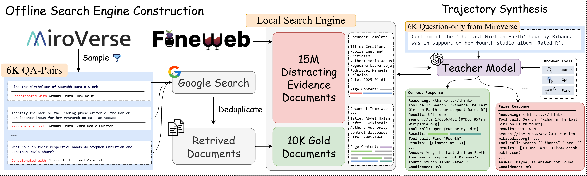
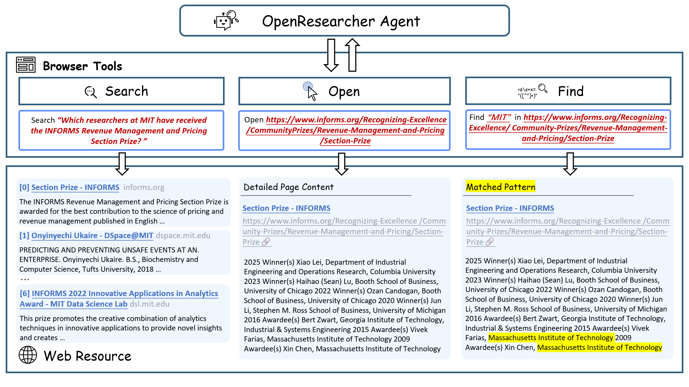
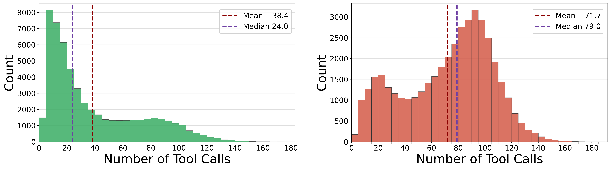
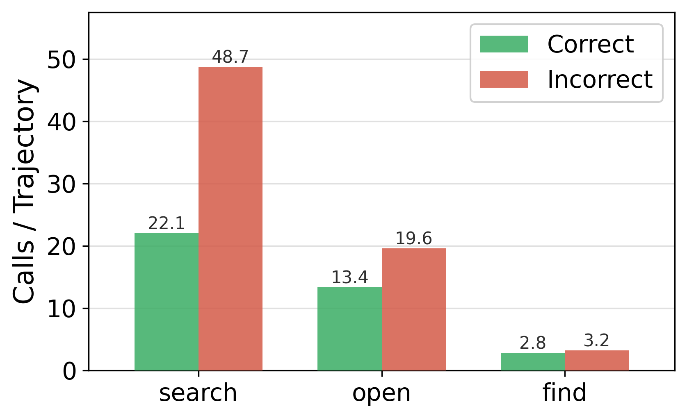

97,630
研究轨迹
16 个随机种子覆盖约 6.1K 个困难问题，保存模型与浏览器的完整多轮交互。
它不是一款文献管理软件，而是一套把长程搜索行为蒸馏进开放权重模型的方法： 先在可控的离线网络环境中合成 9.76 万条研究轨迹，再让一个 30B-A3B 模型学习如何搜索、打开网页、定位证据与收敛到答案。
最短理解：OpenResearcher 的主贡献不是“又发布了一个 30B 模型”，而是把一次性在线证据补全与大规模离线研究轨迹合成解耦，让长程搜索行为第一次能够低成本、固定环境地生成、训练和分析。
OpenResearcher 的核心问题不是怎样写一份漂亮报告，而是：怎样低成本、可复现地获得大量包含搜索、证据检查和多步推理的完整示范。
最准确的一句话：OpenResearcher 是一个“离线深度研究轨迹合成管线”，以及由这些轨迹监督微调得到的开放权重浏览智能体。
16 个随机种子覆盖约 6.1K 个困难问题，保存模型与浏览器的完整多轮交互。
总参数约 30B，每个 token 激活约 3B；继承 Nemotron 的长上下文混合架构。
search、open、find 对应从全局检索到页面内证据定位。
覆盖 BrowseComp-Plus、BrowseComp、GAIA 和中文 xbench-DeepSearch。
没有 Zotero 式条目库、PDF 标注、引用格式化或知识图谱界面。
目标集中在开放网络问答与证据检索，不包含选题、实验、代码执行和论文写作闭环。
仓库主要是研究代码，需要多 GPU、搜索索引和 API 配置；本地没有前端应用。

持续调用商业搜索 API 会带来成本、速率限制、网页变化和不可复现性。作者把在线网络只用于一次性补齐证据，之后的大规模轨迹生成全部面对固定语料和固定索引。

作者先用答案引导的在线检索把相关证据放入语料库。真正离线的是之后 9.7 万次长轨迹生成过程。
答案只用于建库和事后判分，不进入教师的研究上下文。否则生成的只是答案条件化的伪搜索轨迹。
先保证证据可检索，再观察模型能否找到它，才能把检索器、搜索策略和推理错误分开分析。
训练信号来自每次查询改写、页面选择、证据定位和停止决策，最终答案只是轨迹的最后一个节点。
材料中的数量口径有冲突：代码 README 把专用语料写为约 11B tokens，论文正文却写成约 10 trillion tokens。15M 文档若有 10T token，平均每篇约 66.7 万 token，明显可疑。页面将“15M 文档”视为稳定口径，不把 token 总量当作已核实事实。
本地 48 个 Parquet 分片完整可读。它们按 seed_42 至 seed_57 分为 16 组，每组几乎都包含相同的 6,102 个问题，区别在于教师采样出的研究路径。
Parquet 总记录数
每条轨迹消息数中位数
每条轨迹平均消息数
最长轨迹消息数
| 字段 | 意义 | 应怎样理解 |
|---|---|---|
qid | 原始问题编号 | 不同 seed 下相同 qid 是同一问题的不同尝试。 |
question / answer | 问题与标准答案 | 答案用于事后验证，不代表教师生成时可见。 |
messages | 完整对话与工具轨迹 | 包括 system、developer、user、assistant、tool 消息，以及思考和工具元数据。 |
latency_s | 生成耗时 | 本地中位数约 3,669 秒，说明这些确实是高成本长轨迹。 |
status | 生成流程状态 | success 表示流程完成，不是答案正确；正确性还要由 grader 判断。 |
chunk_idx / num_chunks | 数据分片信息 | 用于大规模生成、保存和发布，不是对话轮次。 |
为什么一题要生成 16 次？深度研究的成功取决于早期搜到什么、选择打开什么、何时改写查询。论文报告 Pass@1 为 0.567，Pass@16 为 0.792；同一道题存在大量失败路径，也可能有少数关键成功路径。多采样既增加成功数据，也暴露策略差异。
最终模型从 NVIDIA Nemotron-3-Nano-30B-A3B-Base-BF16 初始化，在完整、未经截断的工具轨迹上做一次长上下文 SFT。
52 层、隐藏维度 2,688、128 个路由专家，每个 token 选择 6 个专家；模型类型为 nemotron_h。
训练以 256K 最大长度预打包完整轨迹，避免把研究过程截成不连贯的局部片段。
MoE 让模型保留较大知识容量，同时每步只激活部分参数；A3B 是激活参数规模，不是总参数。
| 项目 | 配置 | 含义 |
|---|---|---|
| 训练数据 | 约 55K 条答案正确轨迹 | 由 97K+ 合成轨迹经过 rejection sampling 得到。 |
| 训练框架 | Megatron-LM | 训练实现放在外部 openresearcher 分支，不在当前 code 仓库内。 |
| 硬件 / 时间 | 8 × H100，约 8 小时 | 这是论文训练配置；代码 README 的运行环境另写为 8 × A100 80GB。 |
| 优化 | 347 steps，global batch 64 | 学习率 5e-5，不做学习率衰减。 |
| 精度 | BF16 | 模型配置和权重均采用大模型常用的半精度表示。 |
训练真正学到的对象：在当前证据不足时继续搜；怎样把模糊问题改写成检索词；从摘要判断哪个链接值得打开；在长页面里定位实体；证据冲突时继续验证；达到足够信心后停止。
推理代码的核心不复杂：每轮把历史消息和工具定义套入 chat template，调用 vLLM 生成；若生成工具调用就执行并回填结果，否则检查是否出现最终答案标记。
读取问题、历史思考与证据，决定查询、页面操作或最终回答。
deploy_agent.py解析 JSON/XML 工具调用、维护会话、重试生成、并发处理题目并写入 JSONL。
每个 qid 独立保存浏览状态，将模型函数调用映射到 search/open/find。
本地 BM25 / Dense 服务，或 Serper 的 Google 搜索与网页抓取。
返回标题、URL 和摘要。负责扩大覆盖、检验假设、发现可追踪的实体与关系。
失败风险：搜索漂移、重复改写、只看 snippet。打开 URL，提取页面正文并以带行号的浏览视图返回。它把“可能相关”变成“可读证据”。
实验中加入 open 带来最大的性能跃升。在当前页面中定位精确字符串，适合人名、年份、机构、数字和术语的快速验证。
减少盲目滚动，也降低上下文和工具调用成本。
BrowseComp-Plus 使用固定语料。BM25 可在 CPU 上运行；Dense 使用 Qwen3-Embedding-8B，文档称额外需要约 15GB GPU 显存。
BrowseComp、GAIA、xbench 等使用真实网络，需要 SERPER_API_KEY。结果会随时间变化，因此不具备严格的固定环境可复现性。
最重要的结果是 BrowseComp-Plus 从基础模型的 20.8% 提高到 54.8%。这是固定语料条件下较干净的模型能力提升证据；其余三个评测依赖 live web，更容易受搜索服务和日期影响。
| Benchmark | OpenResearcher | 代表性对照 | 环境与解读 |
|---|---|---|---|
| BrowseComp-Plus | 54.8% | Base Nemotron 20.8%；Tongyi DR 44.5% | 固定语料 + 本地搜索，最能隔离模型与搜索策略差异。 |
| BrowseComp | 26.3% | o4-mini 28.3%；DeepMiner 21.2% | Live web；OpenResearcher 接近强闭源模型，优于表中其他开放研究智能体。 |
| GAIA text-only | 64.1% | Kimi-K2 57.7%；Claude-4-Sonnet 57.6% | 仅 103 个 text-only dev 样本，不是完整 GAIA 能力结论。 |
| xbench-DeepSearch | 65.0% | o4-mini 67.0%；Claude-4-Sonnet 64.0% | 100 个中文加密测试题；结果接近闭源工具模型。 |
应当怎样表述“超过 GPT-4.1 等模型”：准确说法是“在论文给定的 BrowseComp-Plus 工具和评测设置下得分更高”。它不意味着 OpenResearcher 在通用智能、知识、写作或所有深度研究任务上整体强于这些模型。
正确轨迹平均 38.4 次工具调用，错误轨迹达到 71.7 次；差异主要来自 search（22.1 vs. 48.8）。瓶颈是查询质量和搜索漂移，不是简单增加预算。
已在结果里命中 gold 时，答对概率为 61.84%；明确打开 gold 文档后升至 86.72%。检索 recall 与证据消费必须分开测量。
search-only 准确率 43.86%；加入 open 后 56.39%；三工具齐全达到 62.17%，同时平均调用和 token 使用都下降。
正确轨迹、错误轨迹、全部轨迹分别训练得到 54.81%、55.06%、54.46%，差距不到 0.6 点。工具顺序和证据交互本身可能比最终标签更重要。
移除一次性 gold 文档引导后，gold hit 从 29.54% 降到 1.73%，下游 BrowseComp-Plus 从 54.81% 崩到 6.35%。环境质量是训练数据质量的前置条件。
准确率和 gold hit 随最大轮次持续提升，但超过约 100 轮后趋于平台。系统需要足够探索空间，也需要更好的停止与重规划机制。


对其他科研智能体最直接的启示：不要只记录“最终答对没有”。至少应同时记录候选证据是否被召回、是否被打开、首次命中时间、查询重写次数、页面内定位、证据冲突和停止原因。否则无法知道系统究竟坏在检索、浏览还是推理。
当前归档约 36GB。论文和数据可以直接研究；模型目录看似有 29GB，但其中约 26GB 是未完成下载的临时文件，不能被 Transformers 或 vLLM 正常加载。
PDF、arXiv 源码、表格、提示词、案例和图片均在本地；足够进行论文阅读、公式核查和图表复用。
16 个 seed、48 个 Parquet 分片、97,630 条记录，总计约 7GB；本地 PyArrow 已验证 schema、行数和样本消息。
索引要求 13 个 safetensors 分片，只有第 13 个完成；其余 12 个位于 Hugging Face 缓存中并带 .incomplete 后缀。
code/.venv 不存在，系统 Python 也没有项目所需的 DuckDB 等完整依赖；需 Python 3.12、vLLM 0.13.0、Java 21 和 Tevatron。
当前没有 Tevatron/browsecomp-plus、评测 corpus、BM25 索引或 Qwen3 稠密索引；setup.sh 会另行下载。
论文使用的 15M 文档离线语料及其训练索引没有包含在当前目录；代码中本地搜索启动脚本面向 BrowseComp-Plus 评测资产。
当前代码仓库以推理和评测为主。SFT 需另外克隆作者的 Megatron-LM openresearcher 分支。
Live-web 搜索需要 Serper Key；自动答案判分需要 OpenAI Key。固定 BrowseComp-Plus 模式可避免 Serper，但仍需本地 corpus 和索引。
| 你的目标 | 现在就能做 | 还需要什么 |
|---|---|---|
| 理解论文与方法 | 可以 | 当前 PDF、TeX 和本页面已经覆盖主链路。 |
| 分析长轨迹数据 | 可以 | 用 PyArrow / Hugging Face Datasets 读取 7GB Parquet；注意工具思考中可能包含长文本。 |
| 运行官方模型做单题研究 | 暂时不行 | 续传完整 13 个权重分片，建立 Python 环境，并准备多张大显存 GPU 或调整量化部署。 |
| 复现 BrowseComp-Plus | 暂时不行 | 除模型外，还需下载 benchmark、corpus、BM25/Dense 索引并启动搜索服务。 |
| 复现论文全部训练 | 当前归档不足 | 15M 训练语料与索引、外部 Megatron 分支、8×H100 级资源和完整训练配置。 |
| 借用其 Agent 循环接入其他模型 | 可改造 | 替换 OpenAI-compatible vLLM endpoint；保留 BrowserPool 和 tool schema 即可。 |
不要被目录大小误导：29GB 并不代表模型已下载完成。继续运行前应先检查 13 个分片是否全部存在，而不是直接执行启动脚本；启动脚本默认模型名仍指向 Hugging Face 远程仓库，若要使用本地权重必须显式传入本地路径。
把大规模 Agent 轨迹合成变成固定环境实验，能够对搜索策略、证据暴露和失败机制做真正可控的分析。
推理与评测代码清晰，脚本齐全；但环境重、资产分散、训练代码外置，仍是研究仓库而非稳健产品。
论文与数据可立即使用；模型、依赖、索引和评测环境都需继续准备。
search → open → find 的显式浏览层级，以及真正打开 gold 证据，是性能提升的关键。统计成功/失败路径、查询改写、证据打开顺序、首次命中时间与停止行为。这 7GB 数据比单纯运行模型更适合当前 Literature 系统横向研究。
复用三层浏览工具、独立会话、固定 corpus 评测和 evidence exposure 指标，把它们迁移到你的 Literature Agent 基准框架。
如果只是理解方法或做数据分析，没有必要立刻承担数十 GB 下载和多 GPU 部署成本；需要端到端对比时再续传。
它擅长开放网络事实查找，不等同于领域文献综述、PDF 图表解析、实验设计或可引用的学术写作系统。
正式叙事、方法、实验与附录的完整版本。
长推理轨迹背景、Deep Research 数据瓶颈、中心问题、自我定位与三项贡献。
Deep Research Agents、离线合成环境，以及作者与相邻路线的差异化论证。
问题策展、gold 文档引导、离线语料、工具定义和过滤逻辑。
训练配置、轨迹统计、成本、五组消融和机制分析。
消息模板、工具解析、最大轮次、并发 worker 和结果落盘。
本地服务和 Serper 两类后端，以及 search/open/find 的执行适配。
BM25、Qwen3-Embedding-8B、FAISS 与 corpus 内容映射。
答案 Judge、置信度解析、轨迹轮数和工具使用统计。
Nemotron-H 层数、专家数、激活专家与上下文长度等精确参数。